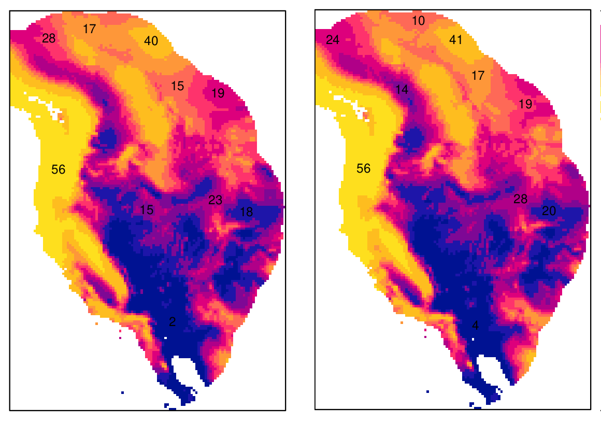
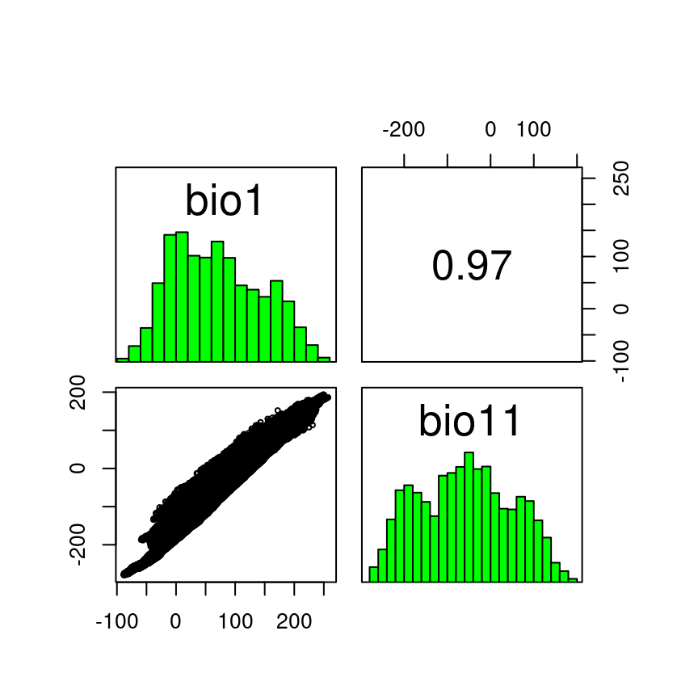
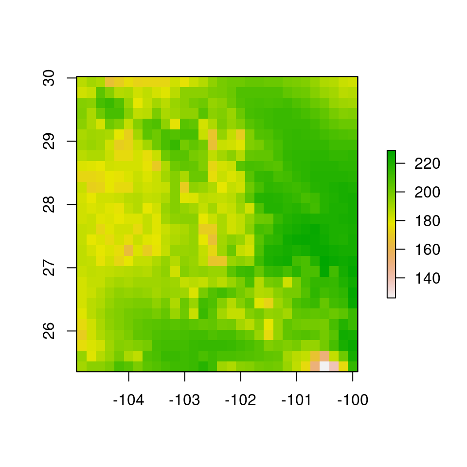
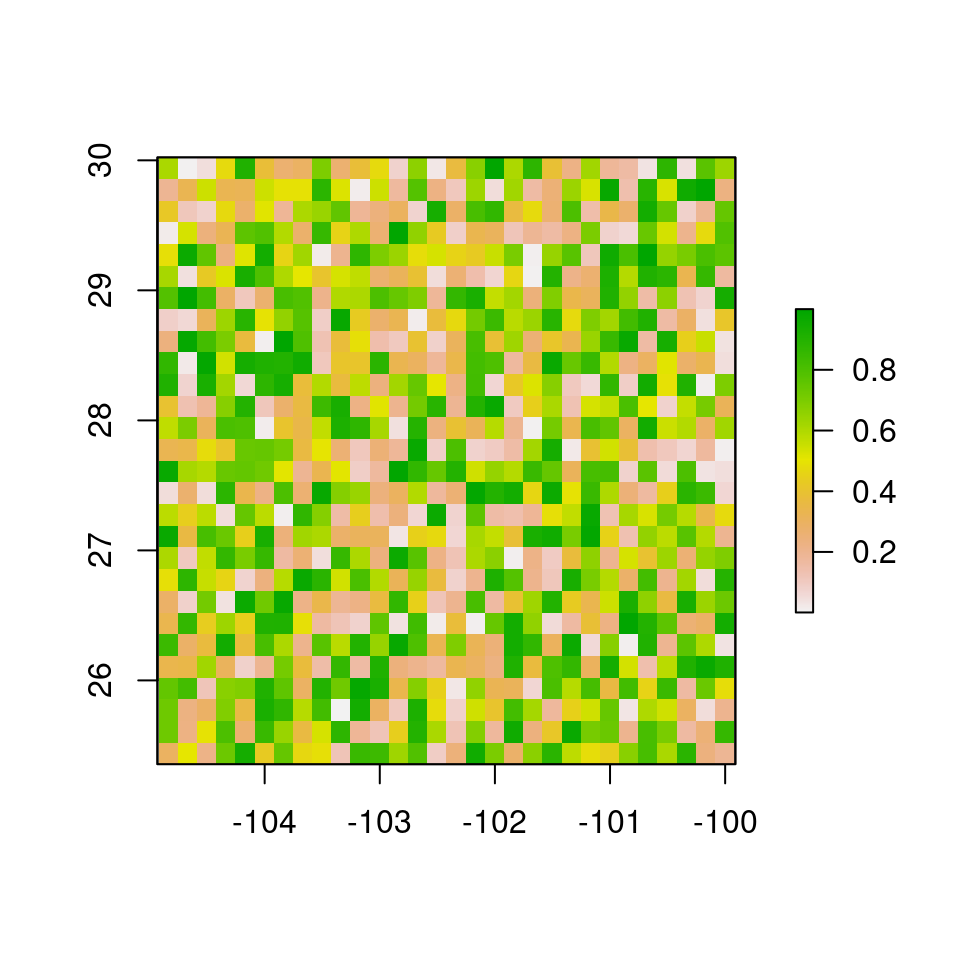
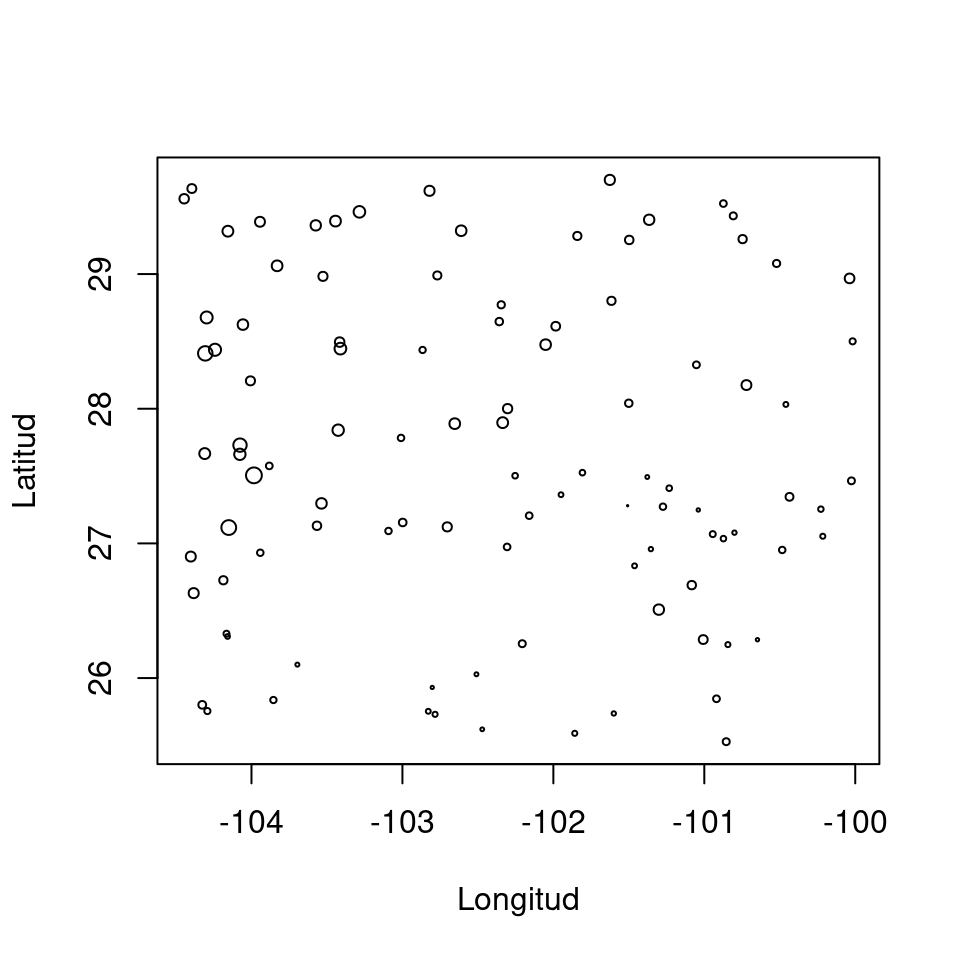
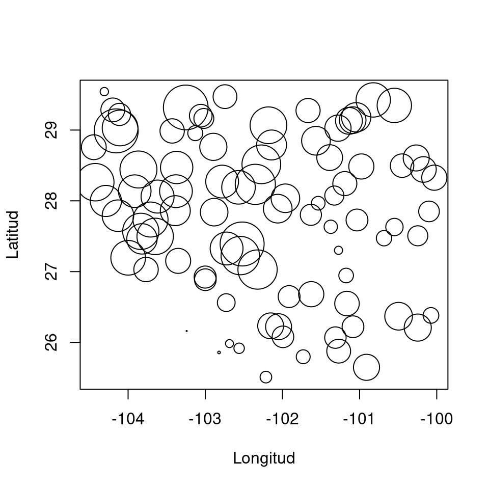
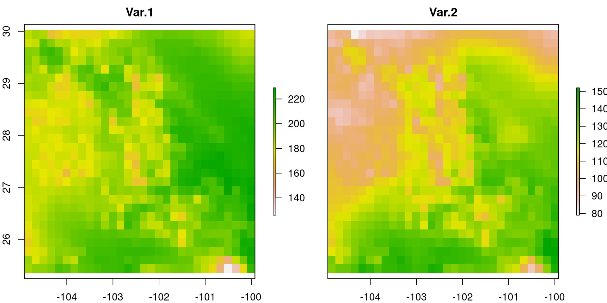
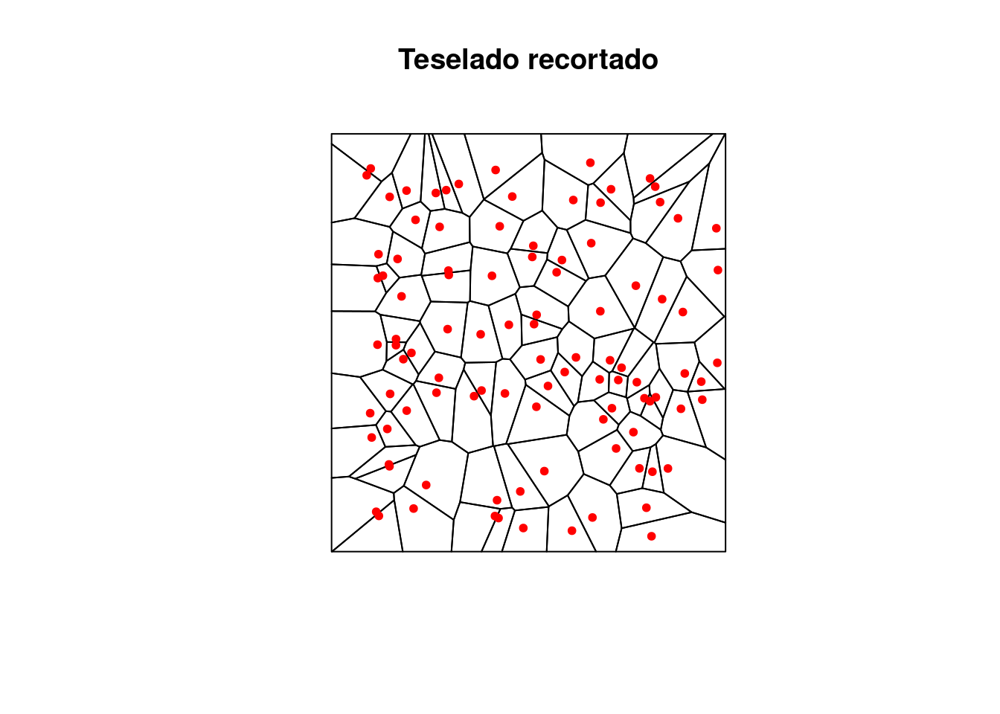

4 Unidad II - Análisis de la asociación espacial entre varios fenómenos
La asociación espacial es el pilar del análisis espacial, y consiste principalmente en medir el grado de dependencia entre dos variables con estructura espacial.
4.1 Correlación y regresión espacial
4.1.1 Correlación espacial
La correlación mide la similitud entre dos variables aleatorias, comparando sus varianzas respectivas. Es una prueba muy sencilla, pero que tiene muchas fallas, por ejemplo, no podemos saber si la correlación es causal. Veamos dos ejemplos de correlación entre dos variables ambientales, uno donde hay una alta correlación y otro donde no la hay.

Figura 4.1: Variables altamente correlacionadas. Los mapas muestran los valores de dos capas ráster, y la gráfica de dispersión contiene los valores de cada píxel, en el eje x, la variable de la izquieda, y el eje y la variable de la derecha.

Figura 4.2: Variables pobremente correlacionadas.
Claramente en el ejemplo de la figura 4.1, una de las variables predice a la otra, pero no sabemos cuál produce a cuál, o si ambas sor producidas por otra variable que no se ha medido. En resumidas cuentas, la correlación no se puede utilizar para analizar causalidad, lo cual es común a todos los análisis estadísticos.
4.1.1.1 Breve recordatorio del cálculo de la correlación
Como ya han de saber, la correlación es una prueba de estadística frecuentista paramétrica. Como tal, consiste en una serie de cáculos aritméticos para obtener un parámetro \(r\):
\[\begin{equation} r = \frac{\sum x_1 x_2}{\sqrt{\sum x_1^2 \sum x_2^2}} \end{equation}\]
donde \(x_1\) y \(x_2\) son las dos variables centradas (variable menos la media aritmética), cuya correlación queremos medir. Esta prueba de correlación se llama de Pearson, y existen algunas modificaciones para datos de otra naturaleza como los ordinales, para lo cual se utiliza la correlación de Spearman. El coeficiente de correlación de esta última se denota con \(\rho\).
La correlación de Spearman es menos sensible que la de Pearson a correlaciones no lineales, por lo que si la gráfica de las variables \(x_1, x_2\) no forma una línea recta como en 4.1, se puede probar con la correlación de Spearman.
4.1.1.2 Correlación en R
Medir la correlación entre dos variables espaciales en R es muy fácil, aunque antes de proseguir, debemos aprender a manejar los datos espaciales en R. Como ya han de saber, cuando no podemos hacer algo en R básico, hay que echar un vistazo a las librerías. Las más potentes para manejar datos espaciales son raster y rgdal. La primera, como su nommbre indica, sirve principalmente para imágenes, la segunda, para vectores y puntos. Ambas son compatibles, es decir se pueden hacer procesos espaciales combinando los objetos de R que ambos paquetes utilizan.
Vamos a leer un raster con la paquetería raster y la función del mismo nombre:
library(raster)
r <- raster("Capas-ejemplo/bio1.tif")El nombre del achivo es bio1.tif y está contenido en la carpeta “Capas ejemplo.” Para hacer una prueba de correlación, necesitamos leer otra capa:
r1 <- raster("Capas-ejemplo/bio11.tif")y las vamos a agrupar en un objeto para hacer la prueba de correlación con la función pairs del mismo paquete raster:
st <- stack(r, r1)
pairs(st)
Como podemos ver, la función pairs hace un gráfica con los histogramas de cada variable (en verde), el gráfico de dispersión, y el coeficiente de correlación de Pearson. Vamos a ver entonces qué está haciedo la función pairs
Vamos a transformar sl objeto st en una tabla con dos columnas para las coordenadas geográficas de cada píxel y otras dos para los valores de cada variable:
t1 <- rasterToPoints(st)
t1 <- data.frame(t1)
knitr::kable(head(t1))| x | y | bio1 | bio11 |
|---|---|---|---|
| -126.1714 | 59.93903 | -34 | -208 |
| -126.0047 | 59.93903 | -40 | -206 |
| -125.8380 | 59.93903 | -43 | -204 |
| -125.6714 | 59.93903 | -41 | -202 |
| -125.5047 | 59.93903 | -42 | -201 |
| -125.3380 | 59.93903 | -42 | -200 |
Como sabemos el coeficiente de correlación de Pearson utiliza dos cálculos, \(\sum x_1 x_2\) y \(\sqrt{\sum x_1^2 \sum x_2^2}\). Vamos a hacerlos a continuación:
x1 <- t1$bio1; x2 <- t1$bio11
x1 <- x1-mean(x1); x2 <- x2-mean(x2)
calc.1 <- sum(x1 * x2)
calc.2 <- sqrt(sum(x1^2) * sum(x2^2))
coef.pearson <- calc.1/calc.2
coef.pearson## [1] 0.96890974.1.2 Regresión
La regresión lineal es un procedimiento relativamente similar a la correlación, aunque la principal diferencia está en que la regresión estima parámetros de una ecuación lineal que se puede usar para predicción, y para identificar variables que explican el comportamiento de los datos que hemos colectado o generado. En contraste la correlación sólo nos sirve para ver si dos variables aleatorias se predicen mutuamente, con qué grado de precisión (coeficiente de correlación), y el sentido (positivo o negativo).
En una regresión lineal, estimamos una serie de parámetros que corresponden con las constantes de una ecuación lineal:
\[ y(x) = \alpha + \beta x \] donde \(\alpha\) es el intercepto o el valor de \(y\) cuando \(x=0\), y \(\beta\) es la pendiente de \(y\) con respecto de \(x\), es decir cuánto cambia \(y\) si \(x\) aumenta en una unidad.
Otro parámetro importante que estimamos en una regresión lineal es \(r^2\), y como su nombre lo indica es el cuadrado del coeficiente de correlación \(r\).
Cuando hacemos modelación estadística, es importante estar al tanto de algunos supuestos. En regresión lineal, estos son algunos importantes:
- Las observaciones de \(y\) son independientes entre sí
- La relación entre \(x\) y \(y\) es lineal
- \(y\) tiene una distribución unimodal y con varianza homogénea (igual por arriba y abajo de la media).
4.2 Análisis de asociación espacial
A diferencia de las dos secciones anteriores, donde vimos cómo se puede estimar el grado de asociación entre dos procesos espaciales, aquí veremos cómo medir la asociación de una sola variable con el espacio, es decir si ésta variable tiene estructura espacial (autocorrelación).
Igual que como hicimos con la prueba de correlación, veamos la fórmula del índice de autocorrelación Moran’s I:
\[\begin{equation} I = N \times W \times \sum_{i = 1}^n \sum_{j = 1}^n w_{ij} \frac{(x_i - \bar{x})(x_j - \bar{x})}{\sum (x_i - \bar{x})^2} \end{equation}\]
donde:
- \(N\) es el número total de unidades espaciales indizadas por \(i\) y \(j\)
- \(W\) es la suma de pesos \(w_{ij}\)
- \(x\) es la variable de interés
- \(\bar{x}\) es la media de \(x\)
- \(w_{ij}\) es una matriz de pesos espaciales
El índice de Moran toma valores de \(-1 > I < 1\), y su interpretación es similar a la del índice de correlación r. De acuerdo con statology:
- Cuando \(I = 0\) significa que la variable espacial tiene una dispersión aleatoria en el espacio:

- Cuando \(I = -1\), la variable espacial tiene una dispesión perfecta en el espacio:

- Cuando \(I = 1\), la variable espacial tiene una agregación espacial perfecta:

4.2.1 Índice de Moran para rasters en R
Existen muchas implementaciones del índice de autocorrelación de Moran, el que utilizaremos está en el paquete raster, y utilizaremos una de las capas de las dos clases pasadas, y otras dos que representarán los casos 2 y 3 de arriba.
Comenzaremos cargando la capa de la variable ambiental:
library(raster)
r <- raster("Capas-ejemplo/Var-1.tif")
plot(r)
Moran(r)## [1] 0.78433Como podemos ver la capa Var-1 está altamente autocorrelacionada, tanto de manera visible, como estadísticamente. Ahora veamos un caso distinto, creando una capa nueva con valores completamente aleatorios:
r1 <- r #Creando el objeto nuevo
r1[] <- runif(ncell(r)) #Reemplazando los valores con unos generados aleatoriamente con una distribución uniforme entre 0 y 1
plot(r1)
Moran(r1)## [1] -0.011854954.2.2 Índice de Moran para puntos
También es posible estimar el índice de Moran para datos de puntos o vectoriales, aunque es necesario construir la matriz de adyacencias espaciales. Haremos este análisis para los datos del primer ejercicio de regresión que hicimos en clase. La matriz de adyacencias es una representación de quién es vecino de quién. Por ejemplo, en la figura ?? el píxel de la esquina superior izquierda es la observación \(x_{1, 1}\), y sus vecinas son \(x_{1, 2}\) y \(x_{2, 1}\), donde \(i\) es la fila y \(j\) es la columna. Para puntos (figura ??), obtendremos la matriz de adyacencia con base en distancia, de modo que consideraremos vecinos a puntos que estén dentro de una distancia predeterminada.
datos <- read.csv("Datos-ejercicio.csv")
datos$reg <- with(datos, (Mediciones - min(Mediciones))/(max(Mediciones) - min(Mediciones)) + 0.1)
with(datos, plot(Longitud, Latitud, cex = reg))
La matriz de adyacencia podemos obtenerla con el paquete spdep(por Spatial Dependence, o dependencia espacial). Para puntos con valores asociados a sus coordenadas geográficas, requiere un par de pasos más:
library(spdep)
vecindad <- dnearneigh(x = as.matrix(datos[, c("Longitud", "Latitud")]), d1 = 0, d2 = 75, longlat = T)
vec.listw <- nb2listw(vecindad)
S0 <- sum(nb2mat(vecindad))
I.puntos <- moran.test(x = datos$Mediciones, listw = vec.listw)
I.puntos##
## Moran I test under randomisation
##
## data: datos$Mediciones
## weights: vec.listw
##
## Moran I statistic standard deviate = 9.7604, p-value < 2.2e-16
## alternative hypothesis: greater
## sample estimates:
## Moran I statistic Expectation Variance
## 0.556186118 -0.010101010 0.003366211Brevemente, la función dnearneigh crea un objeto que contiene: el número de vecinos de cada punto, con base en el criterio de distancia (0 - 250 km), y la identidad de los vecinos de cada punto (punto 1, 2, 3, etc.). Por alguna razón, este objeto tenemos que representarlo como una lista, que no es otra cosa que una colección de objetos de distinta naturaleza y tamaño, para lo que utilizamos nb2listw (neighbourhood to weights list). Y la última pieza de información que necesitamos es la suma total de pesos espaciales, la cual obtenemos con la suma de los elementos de la matriz con la función nb2mat (neighbourhood to matrix). Finalmente utilizamos la functión moran (del paquete spdep) para obtener el valor del estadístico I. Nota que para rasters utilizamos la función Moran del paquete raster.
4.2.3 Ejemplo de aplicación para análisis de residuales
Como se mencionó en el análisis de regresión, el análisis de residuales es esencial en el modelado espacial, pues nos indican si los datos analizados cumplen con el supuesto de independencia.
Comenzaremos con el análisis de regresión, cargando los datos obtenidos en campo:
datos <- read.csv(string)
with(datos, plot(Longitud, Latitud, cex = Mediciones))
y las variables raster para analizar los datos colectados en campo:
library(raster)
r <- stack(paste0("Capas-ejemplo/Var-", c(1, 2), ".tif"))
plot(r)
Una vez cargados lo datos, extraemos los valores de ambas variables con las coordenadas donde obtuvimos las mediciones en campo:
r.extract <- data.frame(extract(r, datos[, c("Longitud", "Latitud")]))
datos <- data.frame(datos, r.extract)Como pueden ver, los datos extraídos los incorporamos al mismo data.frame donde teníamos los datos obtenidos en campo. Este paso, facilitará mucho el manejo de los datos y el llamado de las distintas funciones de R, como la regresión lineal:
modelo.1 <- lm(Mediciones ~ Var.2, data = datos)
summary(modelo.1)##
## Call:
## lm(formula = Mediciones ~ Var.2, data = datos)
##
## Residuals:
## Min 1Q Median 3Q Max
## -3.5996 -0.5276 0.2858 0.8551 1.9831
##
## Coefficients:
## Estimate Std. Error t value Pr(>|t|)
## (Intercept) 15.120815 1.115281 13.56 <2e-16 ***
## Var.2 -0.100829 0.009265 -10.88 <2e-16 ***
## ---
## Signif. codes: 0 '***' 0.001 '**' 0.01 '*' 0.05 '.' 0.1 ' ' 1
##
## Residual standard error: 1.216 on 98 degrees of freedom
## Multiple R-squared: 0.5472, Adjusted R-squared: 0.5426
## F-statistic: 118.4 on 1 and 98 DF, p-value: < 2.2e-16Estos resultados ya los conocemos, y muestran que la variable Var.2afecta significativamente a las mediciones que obtuvimos en campo. Ahora entonces tenemos que ver si los residuales se comportan de manera adecuada, primero extrayéndolos y después estimando su asociación con el espacio:
datos$Residuales <- residuals(modelo.1)Y proseguimos con el índice de Moran como lo hicimos anteriormente, tanto con las mediciones como con los residuales
library(spdep)
vecindad <- dnearneigh(x = as.matrix(datos[, c("Longitud", "Latitud")]), d1 = 0, d2 = 75, longlat = T)
vec.listw <- nb2listw(vecindad)
S0 <- sum(nb2mat(vecindad))
I.meds <- moran.test(x = datos$Mediciones, listw = vec.listw)
I.res <- moran.test(x = datos$Residuales, listw = vec.listw)Índice de Moran para las mediciones
##
## Moran I test under randomisation
##
## data: datos$Mediciones
## weights: vec.listw
##
## Moran I statistic standard deviate = 14.18, p-value < 2.2e-16
## alternative hypothesis: greater
## sample estimates:
## Moran I statistic Expectation Variance
## 0.769152627 -0.010101010 0.003020113Índice de Moran para los residuales
##
## Moran I test under randomisation
##
## data: datos$Residuales
## weights: vec.listw
##
## Moran I statistic standard deviate = 15.7, p-value < 2.2e-16
## alternative hypothesis: greater
## sample estimates:
## Moran I statistic Expectation Variance
## 0.852139315 -0.010101010 0.003016244Lo que sugiere que los residuales están muy agregados.
4.3 Interpolación
La interpolación es el proceso de aproximación de los valores en un intervalo en el que sólo conocemos los extremos inferior y superior. Así por ejemplo en el conjunto ordenado de valores:
\[ 1, 3, 5, 7 \]
es posible inferir que los valores intermedios son:
\[ 2, 4, 6 \]
asumiendo que entre cada observación \(1, 3, 5, 7\), los valores intermedios se pueda aproximar linealmente.
En modelado espacial, la interpolación se utiliza muy frecuentemente para generar capas ráster a partir de mediciones en puntos, como aquellas que utilizamos en correlación y regresión. El fin último de la interpolación es la predecir la variación espacial de los valores de la variable que medimos.
Así como rellenamos los valores intermedios en la secuencia \(1, 3, 5, 7\) asumiento linealidad, hay muchos otros métodos para predicción de valores ordenados de manera más compleja y en dos dimensiones.
Algunas de las técnicas más comunes para predicción espacial son:
- Vecino más próximo
- Inverso de la distancia
- Regresión sobre las coordenadas
- Splines
4.3.1 Vecino más próximo
Este es el método de interpolación más sencillo que existe y consiste en asumir que el valor de los píxeles intermedios es equivalente al mismo valor del píxel más cercano.
4.3.2 Inverso de la distancia (IDW en inglés)
Este método asume que los valores de la variable interpolada entre los puntos de referencia cambia en relación directa con la distancia entre los puntos. Por ejemplo, Si tenemos dos mediciones de temperatura separadas físicamente 10 km, y queremos estimar la temperatura en los puntos intermedios con una precisión de 1 km, la temperatura de éstos será proporcional a la diferencie entre las mediciones.
Figura 4.3: Interpolación por distancia, los extremos representan los puntos donde fueron obtenidas las mediciones, y los píxeles intermedios fueron rellenados por interpolación.
4.3.3 Regresión sobre las coordenadas
Es un método sencillo pero efectivo si la variable que queremos interpolar tiene un gradiente a lo largo de la longitud y/o latitud que se puede aproximar por medio de un modelo lineal. La idea es que la variable de respuesta (\(y\)), sea una función lineal de las coordenadas (\(x_1, x_2\)):
\[ y(Lat, Lon) = \alpha + \beta_1 Lat + \beta_2 Lon\]
Figura 4.4: Ejemplos de gradientes lineales con las coordenadas.
Al igual que con los modelos lineales, este tipo de interpolación puede ser muy flexible, aunque cuando la variable dependiente \(y\) es poco lineal con respecto de la latitud y longitud se recomienda usar Splines
4.3.4 Splines
Son una metodología muy similar a la regresión por coordenadas pero no asume ningún tipo de relación funcional entre la latitud y longitud y la variable de respuesta. La manera en que funcionan las splines es ajustando líneas de regresión con un polinomio de 2o o 3er grado a porciones específicas de cada variable independiente. El resultado de usar splines pueden ser curvas complejas con un contorno suave.

4.3.5 Tutorial de interpolación en R
4.3.5.1 Vecino más cercano
Para interpolar con este método necesitamos primero identificar los píxeles más cercanos a los puntos donde tenemos mediciones, para ello, tenemos que crear un teselado de Voronoi en formato vectorial. Comencemos por cargar los datos con las mediciones, y la capa ráster que usaremos de referencia de resolución espacial:
library(raster)
r <- raster("Capas-ejemplo/Var-1.tif")
datos <- read.csv("Datos-ejercicio.csv")Y proseguimos creando el teselado con la función voronoi del paquete dismo. Debido a que voronoi es la única función de dicho paquete que vamos a usar, evitaremos cargar todo el paquete usando la sintaxis paquete::función.
vo <- dismo::voronoi(datos)
plot(vo, main = "Teselado de Voronoi")
points(datos$Longitud, datos$Latitud, pch = 20, col = "red")
Figura 4.5: Teselado de Voronoi para los puntos de muestreo (en rojo). Nota cómo hay un polígono del teselado para cada punto, las vecindades se establecen con base en los polígonos que comparten frontera.
Después, para obtener el raster interpolado, tenemos que asignar el valor de cada punto a los polígonos del teselado, y rasterizarlo a la resolución del ráster de referencia. Comenzamos creando un ráster con valores de cero (\(0\)), que usaremos para acotar el teselado, pues tiene una extensión mayor a la que nos interesa:
r.0 <-r
r.0[] <- 0
r.vec <- rasterToPolygons(r.0, dissolve = T)## Loading required namespace: rgeosvo <- intersect(vo, r.vec) #Recorte del teselado
plot(vo, main = "Teselado recortado")
points(datos$Longitud, datos$Latitud, pch = 20, col = "red")
Ahora, asignamos los valores de las mediciones a cada polígono y lo rasterizamos asignando a los píxeles del raster de referencia los valores de cada polígono:
vo$Mediciones <- datos$Mediciones
r.ngb <- rasterize(vo, r.0, field = "Mediciones")
plot(r.ngb, main = "Mediciones interpoladas")
plot(vo, add = T)
points(datos$Longitud, datos$Latitud, pch = 20, col = "red")Figura 4.6: Resultado de la interpolación por vecino más cercano. En este procedimiento asignamos a todos los píxeles que quedan dentro de cada polígono el mismo valor.
4.3.5.2 Inverso de la distancia
La función básica de interpolación en R es interpolate del paquete raster. Para aprender a utilizarla podemos hacer una búsqueda rápida en la ayuda de R:
?raster::interpolateY vemos que los argumentos mínimos que necesitamos son:
- Objeto raster
- Modelo
El Objeto raster se refiere a una capa que será utilizada como referencia de resolución y extensión espacial para interpolar, y Modelo es el procedimiento de interpolación que se utilizará (vecino más cercano, etc.). La mayoría de los modelos de interpolación podemos encontrarlos en el paquete gstat. Para interpolar utilizaremos las mismas bases de datos de antes.
Antes de la interpolación, es necesario formatear de manera especial los datos. La base que contiene la localidades de muestreo y las mediciones, tenemos que transformarla en un objeto reconocible por el paquete sp, de modo que sepa qué columnas contienen las coordenadas \(x, y\), y cuáles los datos:
library(gstat)
datos.sp <- datos
coordinates(datos.sp) <- ~ Longitud + Latitud
proj4string(datos.sp) <- CRS(proj4string(r.0))Y hacemos lo mismo con el ráster de referencia, primero transformándolo en data.frame y luego en SpatialPointsDataFrame:
new.data <- data.frame(rasterToPoints(r.0))[, 1:2]
names(new.data) <- c("Longitud", "Latitud")
coordinates(new.data) <- ~ Longitud + Latitud
proj4string(new.data) <- CRS(proj4string(r.0))Nota que en ambos casos anteriores tuvimos que especificar qué sistema de coordenadas se usó, en este caso fue el datum WGS84 con número de identificación EPSG 4326.
Y ahora sí, corremos la rutina de interpolación con la función idw (inverse distance weighted) de gstat.
inv.dist <- idw(formula = Mediciones ~ 1, locations = datos.sp, newdata = new.data)## [inverse distance weighted interpolation]El objeto que produce la función idw es un SpatialPolygonsDataFrame (vector poligonal), donde cada celda corresponde a un píxel. Para transformar a raster utilizaremos las coordenadas de new.datay los valores interpolados con la función rasterFromXYZ:
r.idw <- rasterFromXYZ(data.frame(coordinates(new.data), inv.dist$var1.pred))
#Gráfica
par(mfrow = c(1, 2))
plot(r.idw, main = "Inverso de la distancia")
plot(r.idw)
points(datos.sp, pch = 20, col = "red", cex = 0.5)Figura 4.7: Interpolación por inverso de la distancia.
Como podemos ver el resultado de la interpolación con vecino más cercano es muy diferente de inverso de la distancia. ¿Qué artefacto puedes detectar?
4.3.6 Regresión de las coordenadas con splines
En esta ocasión nos retringiremos a revisar estos métodos en conjunto pues las ocasiones en que podríamos detectar gradientes perfectos como en la figura 4.4 son muy escasos. En la inmensa mayoría existirán estructuras topográficas en el espacio que harán que las relaciones entre lo que medimos y las coordenadas geográficas sean no lineales. Por lo tanto, la herramienta más útil son los splines. La implementación más sencilla de splines para usar en R son los modelos lineales aditivos.
Para estos análisis podemos utilizar todos los objetos que ya formateamos hasta ahora. Las funciones para ajustar modelos lineales aditivos están en el paquete mgcv, instalado por defecto con R, en la función gam (generalised additive model). Por defecto, las fórmulas que se usan en gam son idénticas a las que se usan en lm (modelo lineal). Para que una variable pueda incorporar no-linealidades, necesitamos espacificar el tipo de splines que se utilizarán con otras funciones. Veamos:
library(mgcv)
spl <- gam(Mediciones ~ s(Longitud, Latitud, k = 25), data = datos)donde s es la función suavizadora o spline, y k es el número de nodos que habrá en cada variable. Yo decidí arbitrariamente utilizar 25 nodos, pero en realidad puede haber objetivamente más o menos nodos. Los nodos son puntos igualmente espaciados en el rango de valores de cada variable en los cuales se estimarán parámetros del spline. Por ejemplo, para Longitud -100 – -101, un parámetro, y otro para -101 – -102.
Para ver las predicciones de gam:
spl.pred <- predict(spl, newdata = data.frame(coordinates(new.data)))
r.spl <- rasterFromXYZ(data.frame(coordinates(new.data), spl.pred))
plot(r.spl, main = "Interpolalción con splines")
points(datos.sp, pch = 20, col = "red", cex = 0.5)Figura 4.8: Resultado de la interpolación con splines en un modelo aditivo generalizado, haciendo regresión sobre las coordenadas
Otra implementaciín de splines, incluso más adecuada para la interpolación espacial, se llama Thin Plate Spline, disponible con la función Tps en el paquete fields.
4.3.7 Otros tipos de interpolación
- Bicúbico
- Bilineal
- Kriging
- Regresión-Kriging